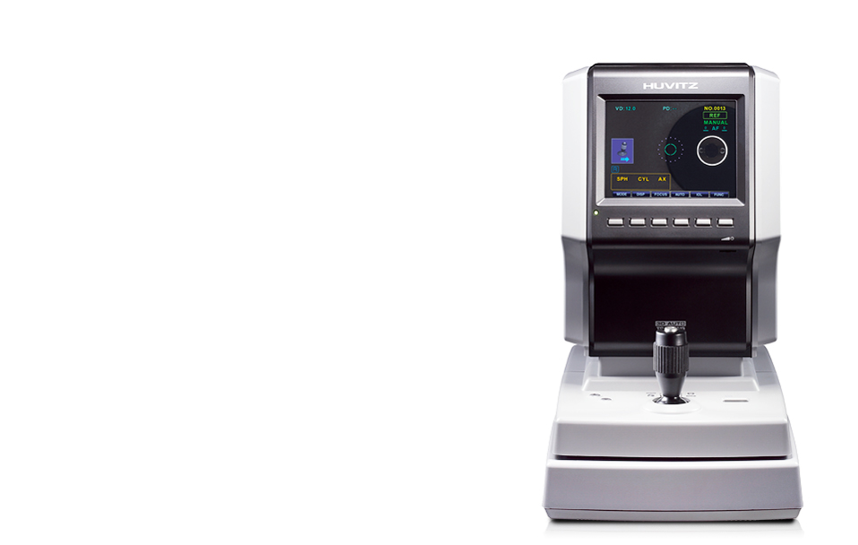
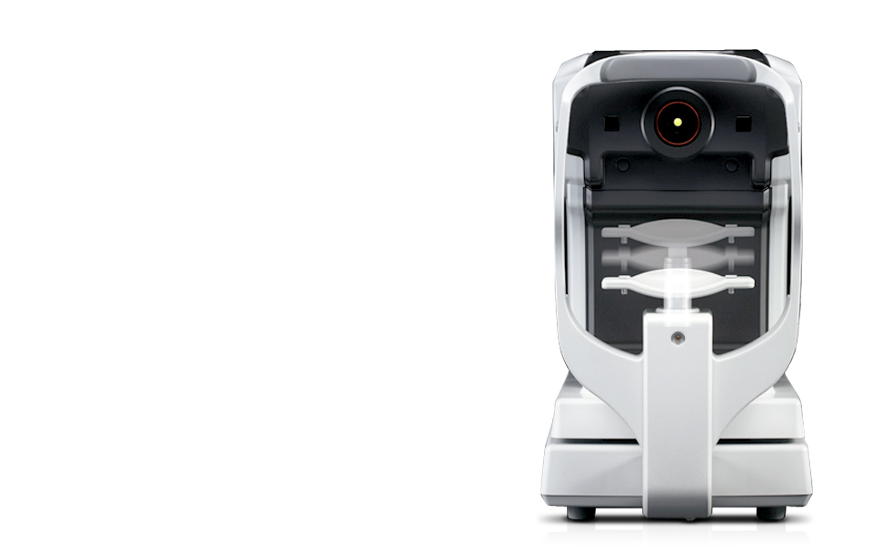

HRK-7000/HRK-7000A
(검안용굴절력측정기)
Wavefront 테크놀로지 기반의 검안용굴절력측정기
이 제품은 의료기기이며, 사용상의 주의사항과 사용방법을 잘 읽고 사용하십시오.
(심의번호: 2013-I10-04-1445)
- 
- 


제품소개
Wavefront Technology 적용
- 각막주변부 측정(Peripheral)기능
- Wavefront Map 그래픽
디스플레이 - Auto Tracking
HRK-7000A 모델만 해당)
- Wavefront Technology 적용
- 빛의 파면(Wavefront) Data를 정밀하게 분석하는 새로운 Wavefront 테크놀러지를 적용하여 정확성향상은 물론 강한 퍼포먼스와 편리성을 실현하였습니다.
- 각막주변부 측정(Peripheral)기능
- 각막중심으로부터 상/하/좌/우 90도 방향으로 각막곡률을 연속 측정하여 각 지점의 곡률 값과 이심률을 알 수 있으므로 보다 정확한 콘택트렌즈 처방이 가능합니다.
- Wavefront Map 그래픽 디스플레이
- 굴절이상 상태를 그래픽으로 보여주어 고객의 이해를 도와줄 뿐 아니라 검안에 대한 신뢰도를 더욱 높여줍니다.
- Auto Tracking (본 기능은 HRK-7000(A)만 가능합니다)
- 첨단 자동 인식 및 3차원 구동 메커니즘이 동공의 측정 포인트를 자동으로 추적해 측정을 완료합니다.
제품사양
| 측정모드 | |
|---|---|
| K/R Mode | Continuous Keratometry & Refractometry |
| REF Mode | Refractometry |
| KER Mode | Keratometry |
| CLBC Mode | Contact Lens Base Curve Measurement |
| KER P Mode | Peripheral (각막 주변부 측정) |
| 굴절력측정 | |
| 각막정점거리 | 0.0, 12.0, 13.5, 15.0 |
| 구면도수 |
|
| 난시도수 | 0.00~10.00D(0.125, 0.25D 단위) |
| 축각도 | 1~180。(1º 단위) |
| 난시표시 | -, +, ± |
| 동공거리 | 10~85mm |
| 최소동공경 | ø2.0mm |
| 각막곡률측정 | |
| 각막곡률반경 | 5~10.2mm (0.01mm 단위) |
| 각막굴절력 |
|
| 각막난시도수 | 0.00~-15.00D(0.05 / 0.125 / 0.25D 단위) |
| 각막난시축각도 | 0~180。(1º 단위) |
| 동공사이즈 | 2.0~14.0mm (0.1mm 단위) |
| 데이터 메모리 | 좌ㆍ우안의 10회분 측정값 |
| HRK-7000A 오토트래킹 구동범위 | |
| 상ㆍ하 | ±15mm |
| 좌ㆍ우 | ±5mm ±2mm |
| 앞ㆍ뒤 | ±5mm ±2mm |
| 제품규격 | |
| 모니터 | 6.5 inch Color TFT LCD |
| 내장 프린터 | 열전사식 라인 프린터 |
| 절전기능 | 약 5분간 사용중단시 주요전원 차단(버튼을 누르면 복귀함) |
| 전원 / 소비전력 | AC100-240V, 50/60Hz (프리볼트) 60W |
| 크기 / 무게 | 252(W) x 500(D) x 432(H)mm / 20kg |
| 상기 제품의 디자인과 세부 사항은 기능 향상을 위해 사전 예고없이 변경될 수 있습니다. | |